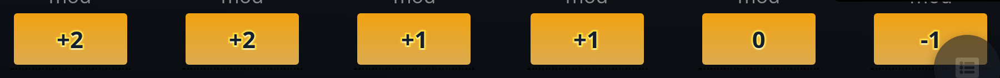
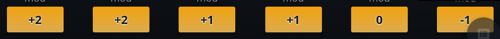
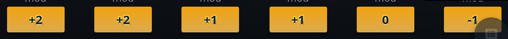
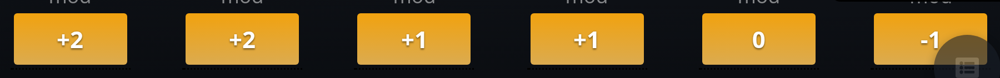

Dark Button Text on the ability buttons, dark theme, from the running branch at three times actual size. Every option keeps the built light glow. The gradient runs over the height of the letters, not the whole button.




The button’s own colours, reversed (o) or solid (p), blend in: #dbab50 and #f1a20f are about as light as the button, so all that shows is the glow. It takes a colour lighter than the button at the top to “stand it up”: (q) reads as lit from above, and (r) adds a darker edge below, which reads as raised.
Building a gradient outline needs a markup change: a stroke can’t take a gradient, so the label is drawn twice (a copy behind it carries the gradient). The ability button would need its label in a data-label attribute for the stylesheet to copy. The solid rim (k) needs no markup change.